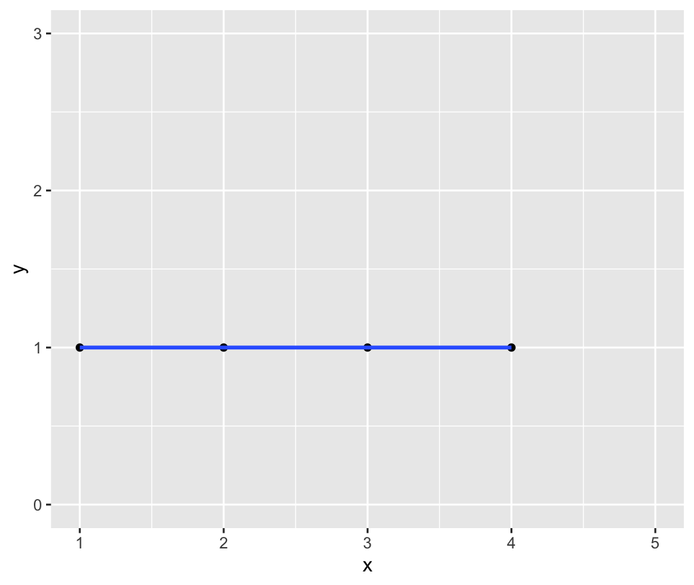
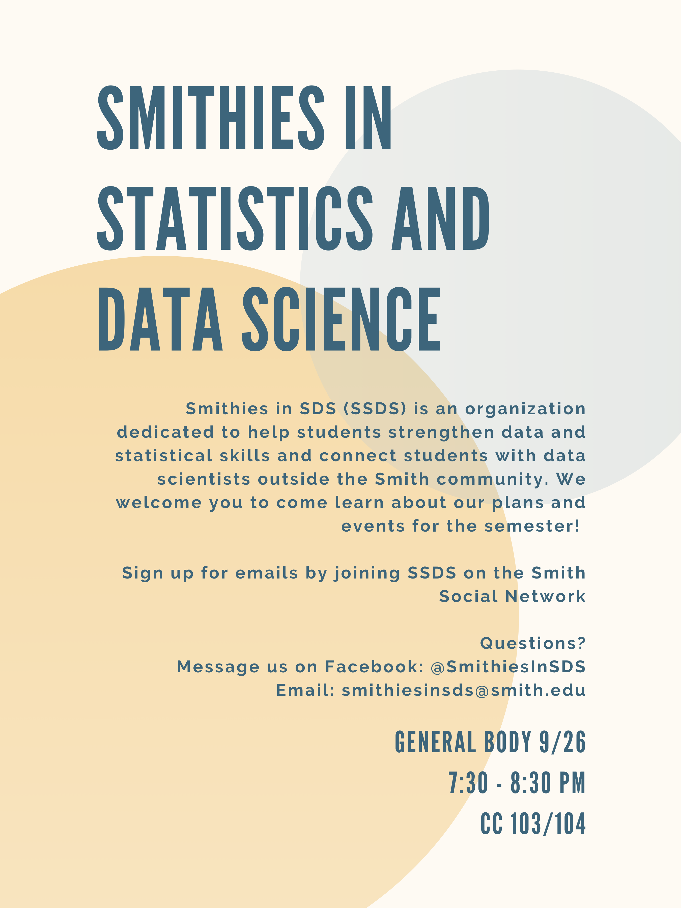
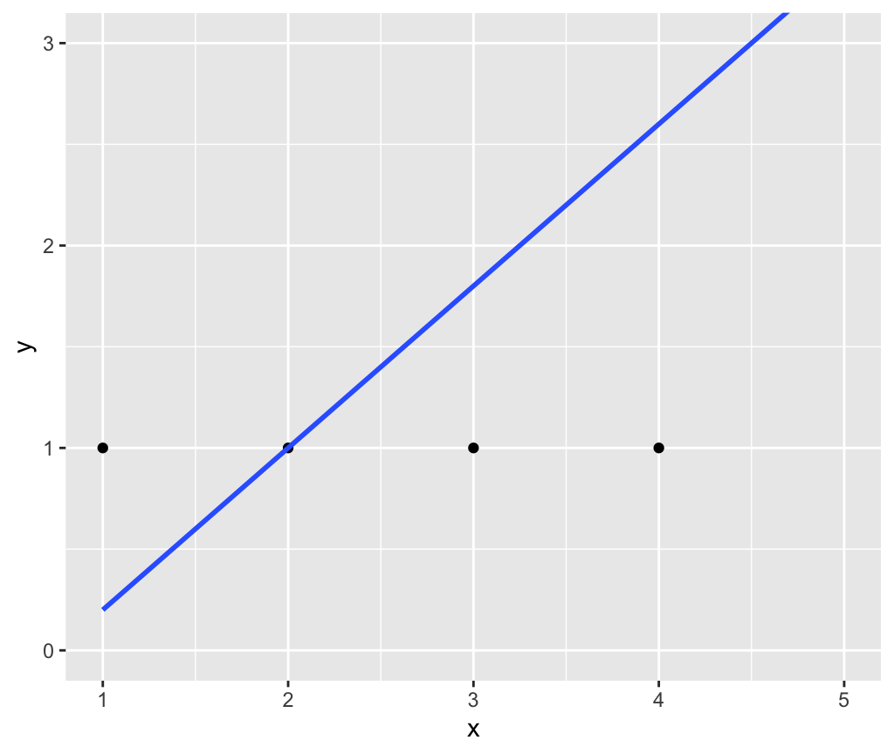

SDS 192: Introduction to Data Science
Albert Y. Kim
Last updated on 2019-10-21
Schedule
Topics:
- Data visualization (pink): Grammar of Graphics, Five Named Graphs (5NG), color theory.
- Working with data (blue): data wrangling, importing, and formatting
- Maps and spatial data (green): Maps and geospatial data.
- Learning how to learn new data science tools (yellow): SQL, TBD.
Note that while topics and topics dates may change, all problem sets (PS), project, and midterm dates will not.
Lec 18: Mon 10/21
Announcements
- MP2 rubric posted
- Posting in
#mapschannel on Slack - For Wednesday’s lecture sit next to your MP2 partner
Today’s topics/activities
1. Chalk talk
- Go over PS04 solutions
- Recap of Lec17: How to
arrange()by more than one variable - Last major set of verbs:
_join()data frames,select(), andrename()variables.
2. In-class exercise
- Go over ModernDive 3.7, 3.8.1 - 3.8.2.
Lec 17: Fri 10/18
Announcements
- PS05 posted: Due in one week.
- Mini-Project 2 posted: Due in two weeks.
- SDS talk on Monday at 5pm by Yeshimabeith Milner, founder of Data for Black Lives. Shout out to Smithie Laneé Jung for her important role in making this happen.
Today’s topics/activities
1. Chalk talk
- Recap of Lec16:
- Go over diagram of
group_by() %>% summarize() - Difference between
sum()andn()summary functions.
- Go over diagram of
mutate()new columns/variables andarrange()i.e. sort rows
2. In-class exercise
- Go over ModernDive 3.5 - 3.6
Lec 16: Wed 10/16
Announcements
- Slack: Post on
#random
Today’s topics/activities
1. Chalk talk
- Recap of Lec14
summarize()rows andgroup_by() %>% summarize()
2. In-class exercise
- Keyboard shortcut in RStudio
- Go over ModernDive 3.3 - 3.4
Lec 15: Fri 10/11
Announcements
- PS04 posted
- MP1: Due at 5pm on Friday.
- Files on Moodle
- Peer evaluation Google Form
- Group leader only: PDF of reflection piece on Moodle
Today’s topics/activities
1. In-class exercise
- Put finishing touches on MP1
- Do readings from Lec14 on Wed 10/9: ModernDive 3 - 3.2
- Start PS04 after you’ve done ModernDive readings
Lec 14: Wed 10/9
Announcements
- Are you interested in Majoring in SDS?
Today’s topics/activities
1. Chalk talk
- Intro to data wrangling
- Pipe operator
%>% filter()rows that meet a certain criteria
Example:
2. In-class exercise
- Go over ModernDive 3 - 3.2
Lec 13: Mon 10/7
Announcements
- No talking about midterm until Wednesday’s lecture please.
- Sit next to your MP1 partner for today’s lecture.
- If you’re curious about my experiences in grad school, working at Google, switching to academia, and advice for aspiring data scientists, check out my appearance on episode #43 of the DataBytes podcast “To Google and Back.” Also available on Apple Podcasts and Google Play.
Today’s topics/activities
1. Chalk talk
- Recap of Lec09:
spanargument fromgeom_smooth()- What is
se = FALSEmean
- What is a “minimally viable product”?
2. In-class exercise
- Work on MP1
Lec 12: Fri 10/4
Announcements
- Part of class-time on Monday to work on MP1
- Go over updated Midterm I instructions
Today’s topics/activities
1. Chalk talk
- Trend lines. Two types (among many):
- Linear regression
- LOESS smoother:

- Let’s make a Shiny interactive visualization! If this is your first shiny app, you will need to install some packages: say “yes” to any prompts.
- Go to RStudio menu bar -> File -> New File… -> Shiny -> Give it title “LOESS smoother”
- Let’s keep things simple and delete everything after line 38
- Save it as
loess.Rmd - Click “Run Document”
- See all possible input methods by looking at cheatsheet. Go to RStudio menu bar -> Help -> Cheatsheets -> Web Applications with Shiny -> Look at right-side of first page.
2. In-class exercise
First, copy this to your classnotes.Rmd and go over code.
library(ggplot2)
library(dplyr)
library(gapminder)
# 1. Recreate plot from PS02 but with no color:
gapminder_2007 <- gapminder %>%
filter(year == 2007)
# 1.a) Add LOESS smoother layer with geom_smooth()
ggplot(data = gapminder_2007, mapping = aes(x = gdpPercap, y = lifeExp, size = pop)) +
geom_point() +
geom_smooth()
# 1.b) Remove standard error bars
ggplot(data = gapminder_2007, mapping = aes(x = gdpPercap, y = lifeExp, size = pop)) +
geom_point() +
geom_smooth(se = FALSE)
# 1.c) Change span of "smoothing" window by changing span = value. Try different values.
ggplot(data = gapminder_2007, mapping = aes(x = gdpPercap, y = lifeExp, size = pop)) +
geom_point() +
geom_smooth(se = FALSE, span = 0.25)
# 1.d) Force line to be straight. i.e. linear regression
ggplot(data = gapminder_2007, mapping = aes(x = gdpPercap, y = lifeExp, size = pop)) +
geom_point() +
geom_smooth(method = "lm", se = FALSE)Second, in loess.Rmd you’re change only the code within the code
renderPlot({
})to make an interactive version of plot 1.c) above.
Lec 11: Wed 10/2
Announcements
- None
Today’s topics/activities
1. Chalk talk
- Go over Midterm I
Lec 10: Mon 9/30
Announcements
- Midterm I info posted
- Mini-Project 1 info posted
Today’s topics/activities
1. Chalk talk
- Recap of Lec09: Color palettes from colorbrewer2.org
- Student question: What is a
tibble? - Recap of “five named graphs”: ModernDive Table 2.4
2. In-class exercise
- Go over ModernDive 2.9. In particular in Section 2.9.3, open the
ggplot2cheatsheet in RStudio and read over the differentgeomtypes - Changing default
colorandfillcolor aesthetics:- Copy and paste the code below into your
classnotes.Rmdfile - Change both the color of the scatterplot points and the fill of the bars. You can do this by selecting a palette from colorbrewer2.org or by setting them manually
- Copy and paste the code below into your
library(ggplot2)
library(dplyr)
library(nycflights13)
library(gapminder)
# 1. Recreate plot from PS02, but change default "color" palette of points:
gapminder_2007 <- gapminder %>%
filter(year == 2007)
ggplot(data = gapminder_2007,
mapping = aes(x = gdpPercap, y = lifeExp, size = pop, color = continent)) +
geom_point() +
scale_color_brewer(palette = "Set1")
# 2.a) Recreate Figure 2.26 but change default "fill" color of bars by adding a
# palette layer:
ggplot(data = flights, mapping = aes(x = carrier, fill = origin)) +
geom_bar(position = position_dodge(preserve = "single")) +
scale_fill_brewer(palette = "Set1")
# 2.b) Recreate Figure 2.26 but change default "fill" color of bars by manually
# changing colors in a layer:
ggplot(data = flights, mapping = aes(x = carrier, fill = origin)) +
geom_bar(position = position_dodge(preserve = "single")) +
scale_fill_manual(values = c("darkorange", "forestgreen", "navyblue"))
# 2.c) Soooooo many choices...
colors()Lec 09: Fri 9/27
Announcements
- Slack:
- How to subscribe to a
#channel - Using threads to keep conversations organized
- How to subscribe to a
- Go over PS03 solutions
Today’s topics/activities
1. Chalk talk
- Recap of barplots: Exercise on pie charts vs barplots below
- Color theory
colorvsfillaesthetics inggplot2- Selecting a color palette from colorbrewer2.org
- How does
ggplot2pick default colors? Using a color wheel - Get the color hex codes of
ggplot2default color palette:

2. Exercise on pie charts vs barplots
Say the following piecharts represent results of an election poll at time points: A = September, B = October, and C = November. At each time point we present the proportion of the poll respondents who say they will support one of 5 candidates: 1 through 5.

Based on these 3 piecharts, answer the following questions:
- At time point A, is candidate 5 doing better than candidate 4?
- Did candidate 3 do better at time point B or time point C?
- Who gained more support between time point A and time point B, candidate 2 or candidate 4?
Compare that to using barplots. Which do you prefer?

3. In-class exercise
- Quiz on podcast
- First phase of Mini-Project 1 roll-out
Lec 08: Mon 9/23
Announcements
- No office hours on Wednesday
- In Lec07 below, added image of chalk talk data and boxplot.
- Problem sets: PS01 handed back
Tweet of the Day
We are thrilled to be at @Statfest & engaging with a dedicated community of statisticians!
— Smith College SDS (@SmithCollegeSDS) September 21, 2019
We even managed to snag a photo with @smithcollege alum Portia Exum of @SASanalytics before her panel. #smithieslead pic.twitter.com/wloPa7Ybyd
Today’s topics/activities
1. Chalk talk
- Recap of boxplots
- Summary statistics that are robust to outliers: median and IQR
- Barplots
2. In-class exercise
- Go over ModernDive 2.8
Lec 07: Fri 9/20
Announcements
- Slack:
- Prof. Katie Kinnaird’s TRIPODS+X - Data Science Education Investigation
- Post on
#randomby Ray
- Problem sets:
- PS01 handed back on Monday
- Go over PS02 solutions
- PS03 posted
- Announcement from Smithies in SDS:

Tweet of the Day
I 😍😍😍 how boxplots make an appearance in Season 4 of @HBO The Wire
— Albert Y. Kim (@rudeboybert) September 19, 2019
Context: A Johns Hopkins academic presents his research on at-risk youth at a Baltimore middle school #TheWire pic.twitter.com/ETC2jYew9v
Today’s topics/activities
1. Chalk talk
- Recap of histograms
- Facets to split a visualization by the values of another variable
- Boxplots! Powerful, but tricky!
Say we want to study the distribution of the following 12 values which are pre-sorted:
1, 3, 5, 6, 7, 8, 9, 12, 13, 14, 15, 30
They have the following summary statistics. A summary statistic is a single numerical value summarizing many values. Examples include the immediately obvious mean AKA average and median. Other less immediately obvious examples include:
- Quartiles (1st, 2nd, and 3rd) that cut up the data into 4 parts, each containing roughly one quarter = 25% of the data
- Minimum & maximum
- Interquartile-range (IQR): the distance between the 3rd and 1st quartiles
| Min. | 1st Quartile | Median = 2nd Quartile | 3rd Quartile | Max. | IQR |
|---|---|---|---|---|---|
| 1 | 5.5 | 8.5 | 13.5 | 30 | 8 = 13.5 - 5.5 |
Let’s compare the points and the corresponding boxplot side-by-side with the values on the \(y\)-axis matching:

2. In-class exercise
- Go over ModernDive 2.6 - 2.7
- Start PS03
I don’t mind what you do with your class time, but it is very important that you complete the reading before next lecture. Boxplots take practice.
Lec 06: Wed 9/18
Announcements
- Prof. Katie Kinnaird’s TRIPODS+X - Data Science Education Investigation
Today’s topics/activities
1. Chalk talk
- Recap of previous lecture
- Live-demo of creating
classnotes.Rmd, an R Markdown file of all in-class exercise code: Write and copy/paste/tweak code inclassnotes.Rmdand not in console. That way you can save it! - Histograms for visualizing distribution of a numerical variable.
2. In-class exercise
- Go over ModernDive 2.5
Lec 05: Mon 9/16
Announcements
- Slack message: Abandoning RStudio Cloud in favor of RStudio Desktop.
- The art of managing Slack notifications
Today’s topics/activities
1. Chalk talk
- Recap of previous lecture
- Overplotting and two approaches for addressing it
- Linegraphs
2. In-class exercise
- Go over ModernDive 2.3.2 - 2.4
Lec 04: Fri 9/13
Announcements
- Screencast from last lecture posted
- I’m currently investigating issue with RStudio Cloud being slow
- PS02 posted under Problem Sets
Today’s topics/activities
1. Chalk talk
- Recap of previous lecture
- R Markdown for reproducible research
Input: An .Rmd file |
Output: An .html webpage |
|---|---|
 |
 |
2. In-class exercise
- At a couple of steps in this process, you will be asked to install packages. Say yes to all of them!
- Fiddle with RStudio settings:
- Go to RStudio menu bar -> Tools -> Global Options… -> R Markdown
- Uncheck box next to “Show output inline for all R Markdown Documents”
- Create new R Markdown
.Rmdfile:- Go to RStudio menu bar -> File -> New File -> R Markdown
- Set “Title” to “My first R Markdown report” and “Author” as your name.
- “Knit” a report:
- Click on the disk icon and save this file as
testingsomewhere on your computer. This will create a file calledtesting.Rmd - Click the arrow next to “Knit” -> “Knit to HTML”.
- An HTML webpage should pop up. However, it may be blocked by your browser. If so, in your browser’s URL bar on the right, click on “Always allow pop-ups”.
- Click on the disk icon and save this file as
- Publish this report on web:
- Click on blue “Publish” button on top right of the resulting pop-up html.
- Select RPubs.
- If you haven’t previously, create an account on Rpubs.com. If you have previously, login.
- Set “Title” to “My first R Markdown report” and “Slug” to “testing”
- You should end up with a webpage that looks like this one. This is live on the web!
- Update your report on web:
- Make some trivial change to your
testing.Rmdfile. - “Re-knit” your report and make sure your trivial change is reflected.
- The blue “Publish” button should now read “Republish”
- Click “Update existing”
- Your updates are now live on the web!
- Make some trivial change to your
- Bonus: Play around with different formatting tools in R Markdown to customize your report! Go to RStudio menu bar -> Help -> Markdown quick reference.
Tips on R Markdown:
- Knit early, knit often! If you wait until only after you’ve added a ton of code to knit and something doesn’t work, you’ll have a hard time figuring out where the error is. If you make incremental changes and knit after every step, you’ll better able to isolate where errors are.
- If you get stuck, go through these 6 R Markdown Fixes first, then seek assistance. These 6 fixes resolve 85% of issues in my experience.
Lec 03: Wed 9/11
Announcements
- Slack updates: custom emojis and vote in today’s poll!
Today’s topics/activities
1. Chalk talk
- Recap of previous lecture
- Grammar of Graphics
- Screencast of “Doing ModernDive readings”. In particular the idea of “Running R code in RStudio”:
2. In-class exercise
- Go over ModernDive 2 - 2.3.1.
Lec 02: Mon 9/9
Announcements
- Syllabus finalized.
- Problem Set 01 due this Friday posted under Problem Sets.
Today’s topics/activities
1. Chalk talk
- Intro to Slack slides
- What is difference between R and RStudio?
- What are R packages?
2. In-class exercise
- Set up RStudio Cloud:
- Click here to join the “SDS192” Workspace.
- Click on “New Project”
- Name it “Class Notes”
- Go over ModernDive reading in schedule above.
About readings in this course:
- You are responsible for completing a lecture’s readings before the next lecture. Ex: you are responsible to read all of ModernDive Chapter 1 before Wednesday.
- I teach lectures assuming you have not done the readings beforehand. However, if it suits your learning style better, please do read beforehand.
- While you don’t need to turn in your learning check answers, I highly recommend you still do them. The solutions are in Appendix D of the book.
- If you have your headphones, you may listen to music during in-class reading time.
Lec 01: Fri 9/6
Announcements
Welcome!
Today’s topics/activities
- My story.
- What this class is about: Answering questions with data.
- Executive summary of syllabus; finalized syllabus will be published next week.
- Coding: it’s normal to be 😱